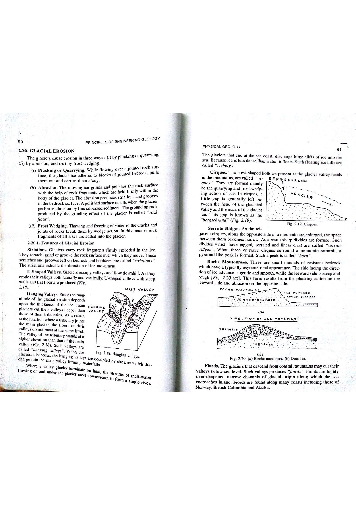

Q144: Constant Head Permeameter: Working Mechanics, Soil Applicability Limits, and Falling Head Contrast
In hydrogeology and geotechnical engineering, the Constant Head Permeameter is a classical laboratory instrument designed to directly determine the hydraulic conductivity ($K$) of granular porous media under 1-dimensional laminar saturated flow conditions (Fetter, 2001; Todd & Mays, 2005; Bangar, p. 31; ASTM D2434).

Mathematical Derivation from Darcy's Law
Flow through the permeameter cell is governed strictly by Darcy's Law for linear, laminar groundwater flow:
Rearranging this relationship yields the operational formula for calculating hydraulic conductivity ($K$):
Where:
- $V$ = Volume of effluent water collected in the graduated beaker or flask ($\text{cm}^3$ or $\text{m}^3$).
- $L$ = Length of the soil sample between piezometer tapings along the flow axis ($\text{cm}$ or $\text{m}$).
- $A$ = Cross-sectional area of the cylindrical sample ($\pi r^2 = \pi D^2 / 4$) ($\text{cm}^2$ or $\text{m}^2$).
- $\Delta h$ = Constant difference in piezometric head between inflow and outflow manometers ($\text{cm}$ or $\text{m}$).
- $t$ = Measured duration of discharge collection recorded by stopwatch ($\text{s}$).

The Fundamental Soil Suitability Constraint
A fundamental rule of geotechnical and hydrogeological laboratory testing dictates that the Constant Head Permeameter is suitable ONLY for coarse-grained granular soils (coarse sands, clean sands, gravels, and permeable sandy aquifers) with:
It is completely unsuitable and incapable of measuring fine-grained soils (silts, clays, sandy clays, and glacial tills) for three fatal physical reasons:
- Imperceptibly Small Discharge Volumes: In fine-grained soils ($K \sim 10^{-6}\text{ to } 10^{-10}\text{ m/s}$), water moves with glacial slowness. Under typical laboratory gradients ($i = 2$), the discharge volume collected over an entire day would barely exceed a fraction of a milliliter ($< 0.1\text{ mL}$).
- Evaporation and Meniscus Distortion: The ambient evaporation loss of water from the collection beaker during the multi-hour test exceeds the actual seepage discharge by several orders of magnitude ($> 1000\%$ error).
- Sidewall Leakage and Preferential Flow: The slightest imperfect boundary seal between the rigid cell wall and the low-permeability clay specimen causes preferential boundary flow ("short-circuiting"), producing errors of several orders of magnitude.
The Solution for Fine-Grained Soils: The Falling Head Permeameter
To measure permeability in relatively fine-grained samples (fine sands, silts, and clays), hydrogeologists exclusively employ the Falling Head (Variable Head) Permeameter (ASTM D5084). In this apparatus, water from a narrow calibrated standpipe of cross-sectional area $a$ flows through the specimen of area $A$, allowing the hydraulic head to fall from $h_1$ to $h_2$ over time $t$:
Because the standpipe cross-section $a$ is very small, a minute seepage discharge causes a large, readily measurable fall in the meniscus level, completely eliminating evaporation errors and enabling precise determination of $K$ in tight silts and clays.
Standard laboratory protocols (ASTM D2434) require:
- Field Core Sampling: Undisturbed core samples (e.g., using thin-walled Shelby tubes or ring samplers) are collected from field sites whenever in-situ fabric, stratification, and natural void ratio must be preserved. Alternatively, remolded specimens are compacted to exact field dry density and optimum moisture content.
- De-airing and Saturation: Samples must be thoroughly de-aired and pre-saturated using de-aired distilled water under vacuum to ensure $100\%$ degree of saturation ($S_r = 1.0$), preventing entrapped air bubbles from blocking pore throats.
- Volumetric and Temporal Measurement: During steady-state flow, the volume of effluent water collected in a calibrated beaker or graduated cylinder is measured, and the elapsed time is recorded with a precision stopwatch.
Statement (A) is a factually true statement regarding the constant head permeameter. The apparatus is the primary standardized ASTM laboratory instrument (ASTM D2434) for measuring the saturated hydraulic conductivity ($K$) of porous aquifer soil cores. Because the question explicitly asks to identify the statement which is "not correct", selecting Option (A) is wrong.
Statement (B) is a factually true statement. In professional geotechnical and hydrogeological investigations, permeameter tests are performed on undisturbed soil samples extracted from drill cores or test pits using thin-walled Shelby tube samplers to preserve natural in-situ grain packing, void ratio, and anisotropic stratification. Because the statement is correct, it cannot be the answer to a negative-form query.
Statement (C) is completely FALSE and hydrogeologically incorrect, making it the correct answer to the question:
- The Constant Head Permeameter is suitable ONLY for coarse-grained granular soils (clean sands, gravels) where $K > 10^{-4}\text{ m/s}$ ($> 10^{-2}\text{ cm/s}$), producing measurable flow rates.
- For fine-grained soils (silts and clays with $K < 10^{-6}\text{ m/s}$), the discharge volume through a constant head apparatus is practically zero, rendering volumetric measurement impossible and introducing crippling evaporation errors ($> 1000\%$).
- Fine-grained samples MUST be tested using the Falling Head (Variable Head) Permeameter or triaxial flexible-wall cells (ASTM D5084).
Therefore, Statement (C) is not correct and represents the unambiguous correct choice.
Statement (D) is a factually true statement describing the exact standard operating procedure of the constant head test: an operator measures the effluent water volume ($V$) collected in a graduated cylinder/beaker and records the duration ($t$) using a stopwatch, computing discharge as $Q = V / t$. Because Statement (D) is accurate, it is an incorrect selection.
| Method Parameter | Constant Head Permeameter | Falling Head Permeameter | Flexible Wall Permeameter |
|---|---|---|---|
| Governing ASTM Standard | ASTM D2434 | ASTM D5856 / AASHTO T215 | ASTM D5084 |
| Applicable Soil Regimes | Coarse sands, gravels, clean sand | Fine sands, silts, silty sands | Intact clays, shales, geosynthetic liners |
| Hydraulic Conductivity ($K$) Range | $K \ge 10^{-4}\text{ m/s}$ ($> 10^{-2}\text{ cm/s}$) | $10^{-7} \le K \le 10^{-4}\text{ m/s}$ | $K \le 10^{-7}\text{ m/s}$ (down to $10^{-11}\text{ m/s}$) |
| Governing Equation | $$K = \frac{V \cdot L}{A \cdot \Delta h \cdot t}$$ | $$K = \frac{a L}{A t} \ln\left(\frac{h_1}{h_2}\right)$$ | $$K = \frac{\Delta q_{in} + \Delta q_{out}}{2 \cdot A \cdot (\Delta h / L) \cdot \Delta t}$$ |
| Primary Source of Experimental Error | Head loss across porous stones & screen clogging | Air bubbles trapped in standpipe column | Membrane sidewall leakage under low confining stress |
A constant head permeameter test is performed on a clean sand sample. The cylindrical permeameter has an internal diameter of $D = 10\text{ cm}$ and a length between manometer taps of $L = 15\text{ cm}$. Under a constant head difference of $\Delta h = 30\text{ cm}$, a total volume of $V = 480\text{ cm}^3$ of water is collected in $t = 2.0\text{ minutes}$. Calculate the hydraulic conductivity ($K$) in: (a) $\text{cm/s}$, and (b) $\text{m/day}$.
1. Cross-sectional area: $$A = \frac{\pi D^2}{4} = \frac{\pi \times (10)^2}{4} = 78.54\text{ cm}^2$$ 2. Time in seconds: $$t = 2.0\text{ min} = 120\text{ s}$$ 3. Hydraulic conductivity: $$K = \frac{V \cdot L}{A \cdot \Delta h \cdot t} = \frac{480 \times 15}{78.54 \times 30 \times 120} = \frac{7200}{282,744} \approx 0.02546\text{ cm/s}$$ 4. Convert to $\text{m/day}$: $$K = 0.02546\text{ cm/s} \times \left(\frac{1\text{ m}}{100\text{ cm}}\right) \times \left(\frac{86,400\text{ s}}{1\text{ day}}\right) \approx 22.0\text{ m/day}$$
A falling head permeameter test is conducted on an undisturbed core of lacustrine silt. The soil sample has length $L = 12\text{ cm}$ and diameter $D = 7.5\text{ cm}$. The standpipe has an internal diameter of $d = 0.8\text{ cm}$. Over an elapsed time of $t = 25\text{ minutes}$, the water level drops from $h_1 = 90\text{ cm}$ to $h_2 = 45\text{ cm}$. Calculate the hydraulic conductivity ($K$) of the silt in $\text{cm/s}$.
1. Areas: $$a = \frac{\pi d^2}{4} = \frac{\pi \times 0.8^2}{4} = 0.5027\text{ cm}^2$$ $$A = \frac{\pi D^2}{4} = \frac{\pi \times 7.5^2}{4} = 44.18\text{ cm}^2$$ 2. Time in seconds: $$t = 25 \times 60 = 1500\text{ s}$$ 3. Falling head formula: $$K = \frac{a L}{A t} \ln\left(\frac{h_1}{h_2}\right) = \frac{0.5027 \times 12}{44.18 \times 1500} \ln\left(\frac{90}{45}\right) = \frac{6.0324}{66,270} \times \ln(2) = (9.1027 \times 10^{-5}) \times 0.69315 \approx 6.31 \times 10^{-5}\text{ cm/s}$$
A student mistakenly attempts to test a clay sample ($K = 1.0 \times 10^{-8}\text{ cm/s}$) in a constant head permeameter with $A = 50\text{ cm}^2$, $L = 10\text{ cm}$, and $\Delta h = 20\text{ cm}$ over a test run of $t = 6\text{ hours}$. (a) Calculate the theoretical volume of seepage water $V$ that would exit the sample. (b) If ambient laboratory evaporation from the collection beaker occurs at a rate of $0.15\text{ mL/hr}$, compare the evaporation loss to the seepage volume.
1. Time in seconds: $$t = 6 \times 3600 = 21,600\text{ s}$$ 2. Theoretical seepage volume: $$V = \frac{K \cdot A \cdot \Delta h \cdot t}{L} = \frac{(1.0 \times 10^{-8}\text{ cm/s}) \times 50\text{ cm}^2 \times 20\text{ cm} \times 21,600\text{ s}}{10\text{ cm}} = \frac{0.216}{10} = 0.0216\text{ cm}^3 \approx 0.0216\text{ mL}$$ 3. Evaporation loss over 6 hours: $$V_{\text{evap}} = 0.15\text{ mL/hr} \times 6\text{ hr} = 0.90\text{ mL}$$ 4. Comparison: $$\frac{V_{\text{evap}}}{V} = \frac{0.90}{0.0216} \approx 41.7\text{ times}$$ Conclusion: The evaporation loss is nearly 42 times larger than the total volume of water passing through the sample! The beaker would end up completely bone dry, demonstrating why constant head testing of fine-grained soils is impossible.
A laboratory permeability test is conducted at a water temperature of $12^\circ\text{C}$, yielding an uncorrected hydraulic conductivity of $K_{12} = 1.85 \times 10^{-3}\text{ cm/s}$. Dynamic viscosities of water are $\mu_{12} = 1.236\text{ cP}$ and $\mu_{20} = 1.002\text{ cP}$. Normalize the hydraulic conductivity to the standard international baseline of $20^\circ\text{C}$ ($K_{20}$).
1. Fundamental relationship between hydraulic conductivity and fluid viscosity: $$K \propto \frac{1}{\mu} \implies K_{20} = K_T \cdot \left(\frac{\mu_T}{\mu_{20}}\right)$$ 2. Substitute values: $$K_{20} = (1.85 \times 10^{-3}\text{ cm/s}) \times \left(\frac{1.236\text{ cP}}{1.002\text{ cP}}\right) = (1.85 \times 10^{-3}) \times 1.2335 \approx 2.28 \times 10^{-3}\text{ cm/s}$$ Failing to normalize for the colder laboratory water temperature would have underestimated the standard permeability by $23.3\%$.
For the sand tested in Problem 1 ($K_{20} = 2.546 \times 10^{-4}\text{ m/s}$ at $20^\circ\text{C}$ with water density $\rho_w = 998.2\text{ kg/m}^3$, $g = 9.81\text{ m/s}^2$, and dynamic viscosity $\mu = 1.002 \times 10^{-3}\text{ Pa}\cdot\text{s}$), calculate the intrinsic permeability of the matrix $k$ in: (a) $\text{m}^2$, and (b) Darcys ($1\text{ Darcy} \approx 9.8692 \times 10^{-13}\text{ m}^2$).
1. Formula relating $K$ and $k$: $$K = \frac{k \rho g}{\mu} \implies k = \frac{K \mu}{\rho g}$$ 2. Calculate in $\text{m}^2$: $$k = \frac{(2.546 \times 10^{-4}\text{ m/s}) \times (1.002 \times 10^{-3}\text{ Pa}\cdot\text{s})}{998.2\text{ kg/m}^3 \times 9.81\text{ m/s}^2} = \frac{2.551 \times 10^{-7}}{9792.3} \approx 2.605 \times 10^{-11}\text{ m}^2$$ 3. Convert to Darcys: $$k = \frac{2.605 \times 10^{-11}\text{ m}^2}{9.8692 \times 10^{-13}\text{ m}^2/\text{Darcy}} \approx 26.39\text{ Darcys}$$
In an upward-flow constant head permeameter cell, sand with specific gravity $G_s = 2.65$ and void ratio $e = 0.65$ is subjected to an upward hydraulic gradient. (a) Calculate the critical hydraulic gradient ($i_c$) at which the effective stress becomes zero and quicksand / boiling occurs. (b) If the sample length is $L = 20\text{ cm}$, what head loss $\Delta h$ will trigger failure?
1. Critical hydraulic gradient equation: $$i_c = \frac{G_s - 1}{1 + e} = \frac{2.65 - 1}{1 + 0.65} = \frac{1.65}{1.65} = 1.00$$ 2. Critical head loss: $$i_c = \frac{\Delta h_c}{L} \implies \Delta h_c = i_c \cdot L = 1.00 \times 20\text{ cm} = 20\text{ cm}$$ If the upstream head exceeds the downstream head by more than $20\text{ cm}$, seepage forces completely counteract the buoyant weight of sand grains, causing the sand bed to fluidize ("quicksand" condition).
A coarse sand sample tested in a constant head permeameter has hydraulic conductivity $K = 4.5 \times 10^{-4}\text{ m/s}$ and total porosity $n = 0.35$. Under a hydraulic gradient of $i = \Delta h / L = 0.25$, calculate: (a) The Darcian discharge velocity ($v$), and (b) The actual pore seepage velocity ($v_s$).
1. Discharge velocity (macroscopic Darcian flux): $$v = K \cdot i = (4.5 \times 10^{-4}\text{ m/s}) \times 0.25 = 1.125 \times 10^{-4}\text{ m/s} = 0.1125\text{ mm/s}$$ 2. Actual interstitial pore seepage velocity: $$v_s = \frac{v}{n} = \frac{1.125 \times 10^{-4}\text{ m/s}}{0.35} \approx 3.214 \times 10^{-4}\text{ m/s} = 0.3214\text{ mm/s}$$ Observation: Water molecules travel through the tortuous interconnected pore channels at nearly three times the apparent Darcian velocity because water can only move through the open porosity $n$.
A composite permeameter specimen is constructed by stacking three equal horizontal layers, each $5\text{ cm}$ thick ($L_1 = L_2 = L_3 = 5\text{ cm}$, total $L = 15\text{ cm}$). The layers have hydraulic conductivities $K_1 = 10^{-2}\text{ cm/s}$, $K_2 = 10^{-3}\text{ cm/s}$, and $K_3 = 10^{-4}\text{ cm/s}$. Calculate: (a) Equivalent hydraulic conductivity for flow perpendicular to layers ($K_{\perp}$), and (b) Equivalent conductivity for flow parallel to layers ($K_{\parallel}$).
1. Flow perpendicular to layering (harmonic mean): $$K_{\perp} = \frac{\sum L_i}{\sum (L_i / K_i)} = \frac{5 + 5 + 5}{\frac{5}{10^{-2}} + \frac{5}{10^{-3}} + \frac{5}{10^{-4}}} = \frac{15}{500 + 5000 + 50000} = \frac{15}{55,500} \approx 2.70 \times 10^{-4}\text{ cm/s}$$ 2. Flow parallel to layering (arithmetic mean): $$K_{\parallel} = \frac{\sum (K_i \cdot L_i)}{\sum L_i} = \frac{(10^{-2} \times 5) + (10^{-3} \times 5) + (10^{-4} \times 5)}{15} = \frac{0.05 + 0.005 + 0.0005}{15} = \frac{0.0555}{15} \approx 3.70 \times 10^{-3}\text{ cm/s}$$ $$\text{Anisotropy Ratio } \frac{K_{\parallel}}{K_{\perp}} = \frac{3.70 \times 10^{-3}}{2.70 \times 10^{-4}} \approx 13.7$$ Flow parallel to bedding is nearly $14\times$ faster, because perpendicular flow is severely throttled by the lowest permeability layer ($K_3$).